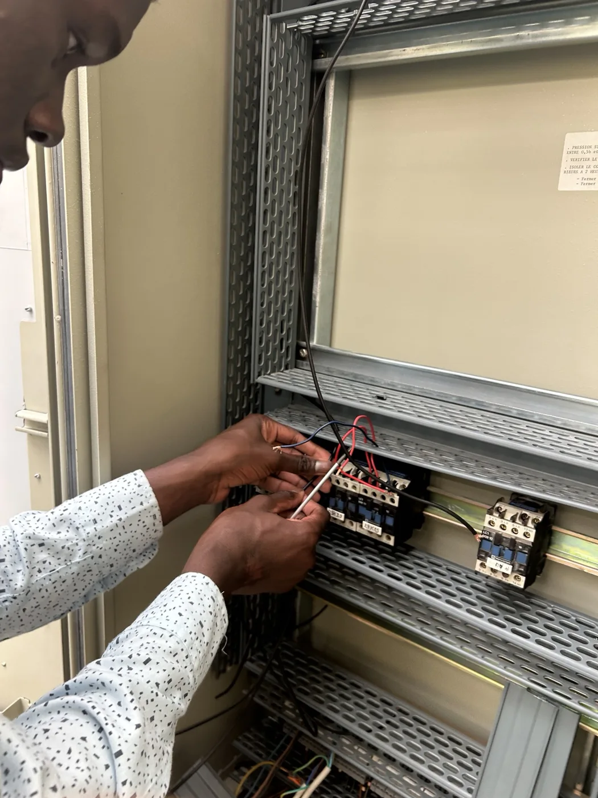

Automatisme
Logique de commande, programmation Ladder et automates industriels.
Portfolio technique · BUT GEII · 2e année
Étudiant en deuxième année de BUT Génie électrique et informatique industrielle à l’IUT Nord Franche-Comté, Université Marie et Louis Pasteur, je souhaite mettre en pratique et approfondir mes compétences dans les domaines du génie électrique et de l’informatique industrielle, notamment en automatisme, électrotechnique et systèmes industriels.
Découvrir mes réalisations Mes compétencesGénie électrique · Instrumentation

De la conception au câblage, de la programmation aux essais.
Domaines techniques
Logique de commande, programmation Ladder et automates industriels.
Programmation embarquée, acquisition et traitement des données.
Machines électriques, circuits de commande et de puissance.
Schémas, câblage, protections et diagnostic.
Distribution électrique et maîtrise de l’énergie.
Capteurs, circuits analogiques, prototypage et mesures.
Réalisations
Travaux pratiques
Référentiel BUT GEII
Formation
IUT Nord Franche-Comté · Université Marie & Louis Pasteur · Deuxième année